WebBuilding
帮助
🧲 磁吸吸附: 关
清空画布
👁 预览
⬇ 导出代码
将左侧组件
拖拽到这里
开始制作网页
📄 导出代码
✕
单一 HTML 文件
HTML + CSS + JS 分离（打包下载）
index.html
style.css
script.js
以下为格式化的完整独立 HTML 代码，可直接保存为 .html 文件在浏览器中打开，或嵌入到任意项目。
📋 复制代码
⬇ 下载文件
👁 页面预览
✕ 关闭预览 (Esc)
✨ 选择动画效果
❓ 使用帮助
✕
添加组件：
从左侧组件库
拖拽
到画布任意位置（自由摆放），或点击组件添加；把组件拖进「容器 Box」可嵌套管理。
网格布局：
「网格布局」组件以相交的水平线与垂直线定义行列；选中后在右侧「样式」面板设置
列数 / 行数 / 间距
，列×行决定格子数量；每个虚线格是小容器，可点击选中并设置样式、逐个放入组件；切到「弹性盒子」模式后格子按设定宽度自动换行排列，可单独调整格宽高改变排列。
图片：
图片组件的「图片地址」支持网址与
本地路径
（如
E:\图片\a.png
，会自动转换为浏览器可用的 file:// 地址），也可在页面面板设置本地背景图。
组件目录：
画布与右侧面板之间的「组件目录」列出所有已添加组件（含容器内的子组件），点击可选中并定位，
双击
可为组件命名（右键目录项可重命名 / 删除）。
编辑文字：
双击
组件进入文字编辑（列表 / 段落 / 标题 / 按钮等均可），点击其它位置结束；图标组件清空文字后保持为空。
超链接：
右键文字组件选「设为超链接」，再右键选「设置链接地址」；按钮可在右键或右侧面板设置跳转链接。
样式：
复杂样式在右侧「样式」面板调整，面板会按组件类型自动隐藏不匹配的选项（如分割线 / 图片无文本与背景设置）。
页面背景：
在画布
空白处右键
快捷设置，或在右侧「页面」面板调整。
动画：
选中组件 → 右侧「动画」面板 → 添加多个效果：
同时播放
（组合叠加，transform 类效果真正合成，如 上浮+放大 同时生效）或
依次播放
（自动累加延迟，实现「动画1 延迟跟随 动画2」）；还可生成自定义关键帧动画。改动即时预览。
磁吸吸附：
点击工具栏「🧲 磁吸吸附」开关，开启后拖动组件（含容器内的组件）靠近其它组件时，会自动吸附对齐其顶部 / 底部 / 中部（带参考线提示）。
移动与缩放：
组件默认可自由拖拽摆放（图片也可拖动）；拖拽选中框四角与四边手柄缩放；方向键微调位置（Shift 加速）。
导出：
「导出代码」可选择
单一 HTML 文件
或
HTML + CSS + JS 分离
；分离模式中组件样式写入 style.css（按选择器关联）、动画由 script.js 通过选择器应用，点击「下载文件」打包为 ZIP，解压后即独立文件夹（index.html / style.css / script.js）。
页面设置：
点击左侧栏左下角「⚙ 页面设置」，可调整
非编辑区
（顶栏、左右侧栏、画布外底色与界面控件）的配色与样式，内置默认浅色 / 深色 / 天空蓝 / 暖阳橙 / 森林绿预设，也可逐项自定义，设置会随作品一起自动保存。
工作内容
自动保存
在浏览器本地，下次打开自动恢复。
如有问题可联系：1987357991@qq.com
⚙ 页面设置
✕
以下设置作用于
非编辑区
（顶栏、左右侧栏、画布外底色与界面控件）；编辑区内的页面内容请用右侧「页面」面板设置。
默认浅色
深色
天空蓝
暖阳橙
森林绿
顶栏主色
顶栏辅色
顶栏文字
侧栏背景
画布外底色
卡片/输入背景
次级背景
悬停高亮
分割线
主文字
次要文字
恢复默认
完成